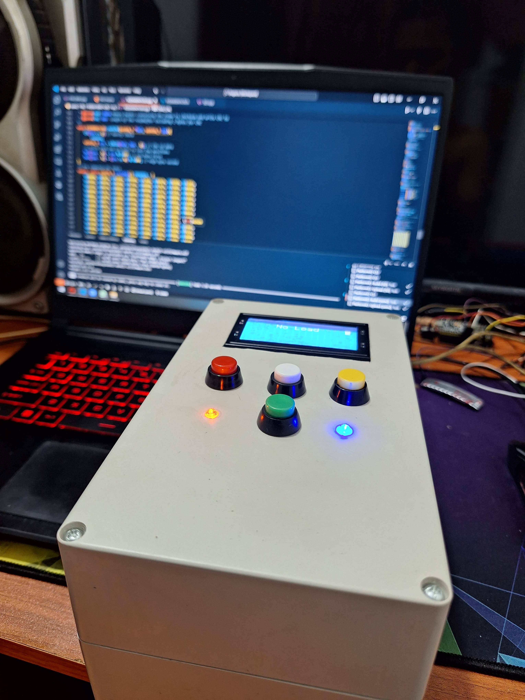
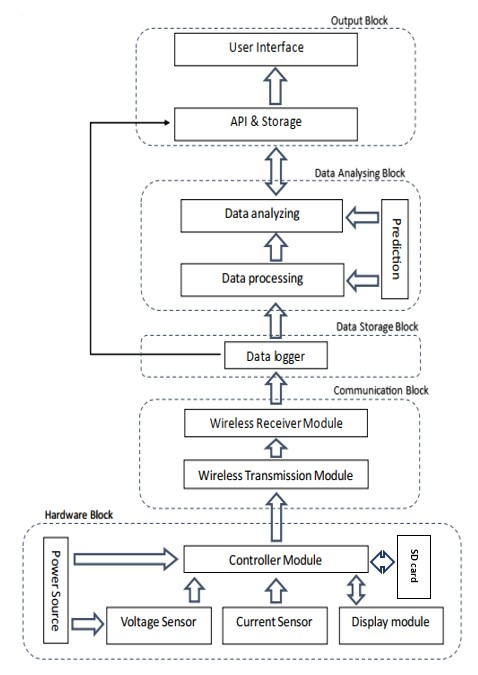
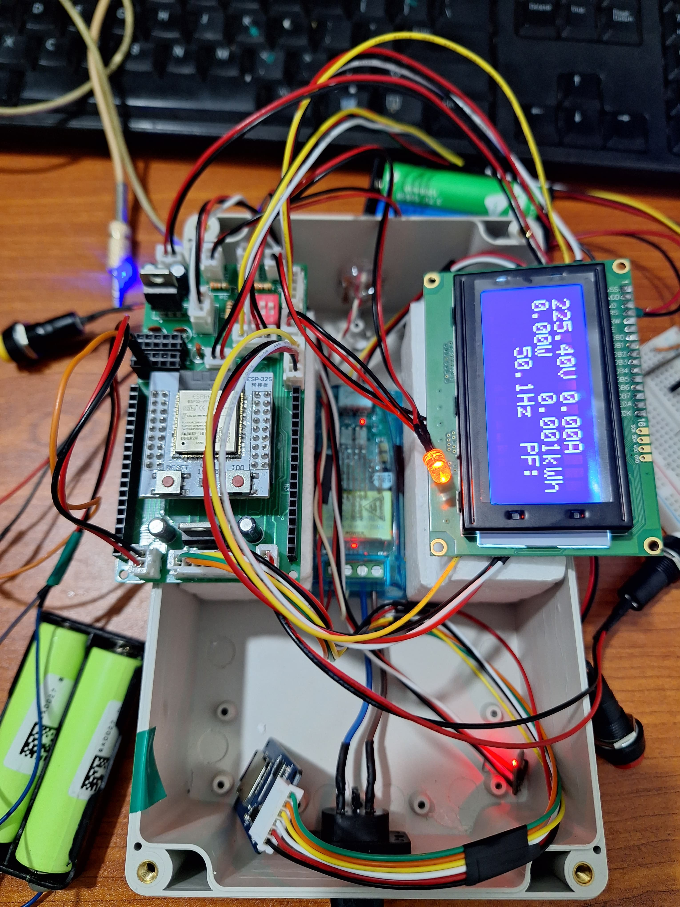
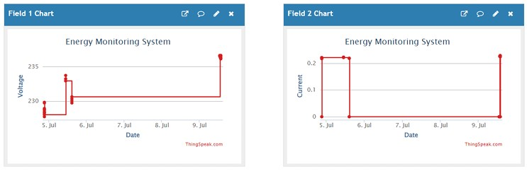
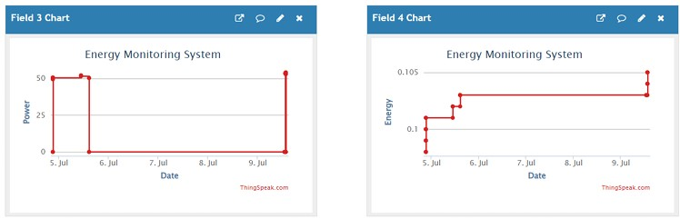
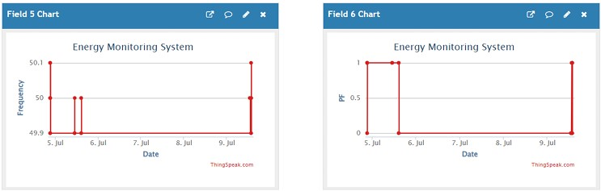

×
Energy Monitoring System

Designed and implemented a customized IoT-based Energy Monitoring System tailored for the garment industry, utilizing the ESP32-WROOM-32UE microcontroller and CT sensors to ensure accurate, real-time measurement of voltage, current, power factor, and energy consumption.
The system features a robust circuit designed in Altium Designer and integrates seamlessly with ThingSpeak for secure cloud data storage and a SD module is also integrated to prevent data loss. A dedicated web interface displays real-time analytics and visualizations, enabling users to monitor energy usage remotely. Additionally, machine learning algorithms were employed to predict consumption patterns and provide actionable insights, supporting energy optimization and cost reduction efforts.
System Overview

The system is composed of energy monitoring nodes that measure voltage, current, active power, and cumulative energy consumption using the V9881D energy measurement chip. A low-cost energy meter was designed using a non-intrusive current transformer (CT) and an ESP32-WROOM microcontroller, which includes a built-in wireless communication module. An LCD is integrated to display real-time measurements, and an SD card module is implemented to store data locally during Wi-Fi outages, ensuring no data is lost. The microcontroller is powered by a DC power supply equipped with a voltage regulator circuit.
The system is designed to be user-friendly, with a web interface that allows users to monitor energy consumption in real-time. The data is stored in the cloud using ThingSpeak, enabling remote access and analysis. The system also includes machine learning algorithms that predict energy consumption patterns, providing users with insights into their energy usage and helping them optimize their consumption.

In my project, I developed a program using the ESP-IDF development framework, structured in the following manner.
- Start: Marks the beginning of the program, where necessary header files and dependencies are included.
- Initialization: This stage sets up all essential hardware components, including the Wi-Fi module, SD card module, and sensors required for data acquisition. The LCD displays a welcome message, indicating that the system has started successfully.
- Main Loop Start: The core of the program begins here. As is standard in embedded systems, the program enters an infinite loop that continuously monitors and processes data. In this phase, UART transmission and LCD display functionalities are activated, and sensor readings are initiated.
- Data Collection: The system actively gathers data from the configured sensors and input devices during each loop iteration.
- Wi-Fi Connectivity Check: The program checks whether the device is currently connected to a Wi-Fi network.
- Data Handling: If a Wi-Fi connection is available, the system uploads the collected data to the cloud in real time. If Wi-Fi is not available, the data is stored locally on the SD card to ensure no data loss.
- End of Main Loop: This indicates the end of the current iteration. The program then loops back to the Main Loop Start, maintaining continuous operation.
- Loop Continuation: This step is inherently managed by the infinite loop structure, allowing the system to function without interruption.
- Stop: Represents the theoretical endpoint of the program. However, in practical embedded system deployments, the program continues to run indefinitely until the device is manually powered down.
ThingSpeak was integrated into the energy monitoring system due to its user-friendly interface and flexibility. A dedicated channel was created with fields for current, voltage, power, energy, power factor, and frequency. The ESP32-WROOM microcontroller formatted and transmitted data using the ThingSpeak API, ensuring accurate and synchronized updates every 5 seconds.
The platform enabled secure data transmission, real-time monitoring, and remote access. Its graphical visualization tools made the measured parameters easy to interpret. Team members accessed raw data via the read API key for analysis and decision-making.
Below are screenshots of the ThingSpeak dashboard displaying real-time energy data.



This project successfully developed an IoT-based energy monitoring system specifically designed for the garment industry. By combining reliable hardware and software components, the system provides real-time tracking of essential energy parameters such as voltage, current, power factor, and overall energy consumption. The ESP32-WROOM-32UE microcontroller and CT sensors were selected for their high compatibility and accuracy, ensuring dependable performance in industrial settings.
Circuit design was carried out using EasyEDA, followed by hardware assembly on a perf copper board. A draft PCB layout was also created to support future production needs.
Integration with the ThingSpeak cloud platform enabled secure data transmission, remote access, and real-time visualization, adding scalability to the solution. Through regular data updates and a user-friendly interface, manufacturers can monitor energy usage trends, identify inefficiencies, and make informed decisions to optimize consumption and reduce costs. The system underwent extensive testing, confirming its ability to accurately measure and display energy metrics, thus demonstrating its potential to significantly improve energy management in the garment sector.